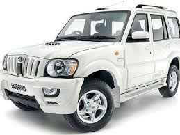
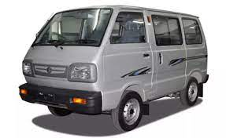

| Specification The Jeep Wrangler has 1 Petrol Engine on offer. The Petrol engine is 1998 cc . It is available with Automatic transmission.Depending upon the variant and fuel type the Wrangler has a mileage of 12.1 kmpl & Ground clearance of Wrangler is 217mm. The Wrangler is a 5 seater 4 cylinder car and has length of 4882mm, width of 1894mm and a wheelbase of 3008mm. Price: 17.78 Lakh Rs. |
|
| Specification The Rolls-Royce Cullinan has 1 Petrol Engine on offer. The Petrol engine is 6750 cc . It is available with Automatic transmission.Depending upon the variant and fuel type the Cullinan has a mileage of 9.5 kmpl . The Cullinan is a 5 seater 12 cylinder car and has length of 5341mm, width of 2000mm and a wheelbase of 3295 mm. Price: 6.95 Cr* Rs. |
|
| Specification The Mercedes-Benz GLA has 1 Diesel Engine and 1 Petrol Engine on offer. The Diesel engine is 1950 cc while the Petrol engine is 1332 cc . It is available with Automatic transmission.Depending upon the variant and fuel type the GLA has a mileage of . The GLA is a 5 seater 4 cylinder car and has length of 4436mm, width of 2020mm and a wheelbase of 2729mm. Price: 48.90 Lakh Rs. |
|
| Specification The Mahindra Scorpio has 1 Diesel Engine on offer. The Diesel engine is 2179 cc . It is available with Manual transmission.Depending upon the variant and fuel type the Scorpio has a mileage of & Ground clearance of Scorpio is 180mm. The Scorpio is a 7 seater 4 cylinder car and has length of 4456mm, width of 1820mm and a wheelbase of 2680mm. Price: 14.50 Lakh Rs. |
 |
| Specification The Mahindra Thar has 1 Diesel Engine and 1 Petrol Engine on offer. The Diesel engine is 2184 cc while the Petrol engine is 1997 cc . It is available with Automatic & Manual transmission.Depending upon the variant and fuel type the Thar has a mileage of & Ground clearance of Thar is 226mm. The Thar is a 4 seater 4 cylinder car and has length of 3985mm, width of 1855mm and a wheelbase of 2450mm. Price: 16.3 Lakh Rs. |
|
| Specification The Maruti Alto K10 has 1 Petrol Engine and 1 CNG Engine on offer. The Petrol engine is 998 cc while the CNG engine is 998 cc . It is available with Manual & Automatic transmission.Depending upon the variant and fuel type the Alto K10 has a mileage of 23.95 kmpl to 32.26 km/kg & Ground clearance of Alto K10 is 160mm. The Alto K10 is a 5 seater 3 cylinder car and has length of 3545mm, width of 1515mm and a wheelbase of 2360mm. Price: 4.40 Lakh Rs. |
|
| Specification The Tata Nano has 1 Diesel Engine, 1 Petrol Engine, 1 CNG Engine and on offer. The Diesel engine is 624 cc, the Petrol engine is 624 cc, the CNG engine is 624 cc while It is available with Manual & Automatic transmission.Depending upon the variant and fuel type the Nano has a mileage of & Ground clearance of Nano is 180 mm. The Nano is a 4 seater 2 cylinder car and has length of 3099 mm, width of 1495 mm and a wheelbase of 2230 mm. Price: 2.50 Lakh Rs. |
|
| Specification The Maruti Omni has 1 Petrol Engine, 1 CNG Engine and 1 LPG Engine on offer. The Petrol engine is 796 cc, the CNG engine is 796 cc while the LPG engine is 796 cc . It is available with Manual transmission.Depending upon the variant and fuel type the Omni has a mileage of 10.9 km/kg to 19.7 kmpl & Ground clearance of Omni is 165mm. The Omni is a 5 seater 3 cylinder car and has length of 3370mm, width of 1410mm and a wheelbase of 1840mm. Price: 3.10 Lakh Rs. |
 |
| Specification The Toyota Fortuner has 1 Diesel Engine and 1 Petrol Engine on offer. The Diesel engine is 2755 cc while the Petrol engine is 2694 cc . It is available with Automatic & Manual transmission.Depending upon the variant and fuel type the Fortuner has a mileage of . The Fortuner is a 7 seater 4 cylinder car and has length of 4795mm, width of 1855mm and a wheelbase of 2745mm. Price: 35.70 Lakh Rs. |
|